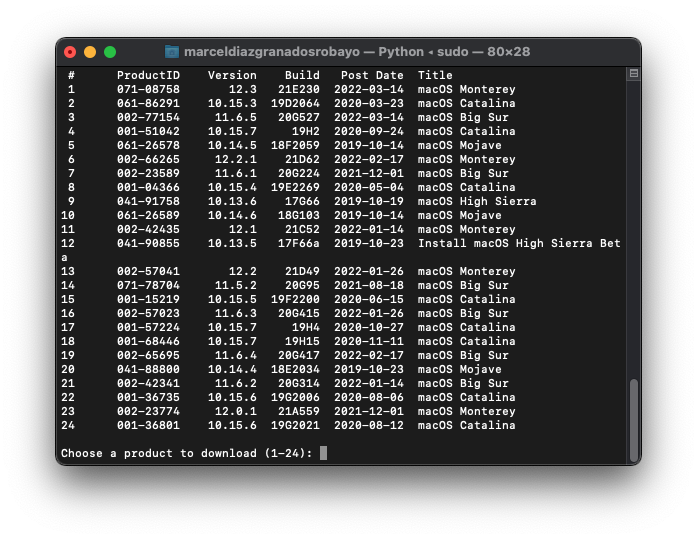

Hacer el instalador en macOS
unque no necesitas una nueva instalación de macOS para usar OpenCore, algunos usuarios prefieren tener una nueva pizarra con sus actualizaciones del gestor de arranque. Para empezar, queremos conseguir una copia de macOS. Puedes saltarte esto y dirigirte a formatear el USB si solo estás haciendo un stick OpenCore de arranque y no un instalador. Para todos los demás, puedes descargar macOS desde el App Store o con el script de Munki.
Descarga de macOS: Sistema operativo moderno
Desde una máquina macOS que cumpla con los requisitos de la versión del sistema operativo que desea instalar. Para las máquinas que necesitan una versión específica del sistema operativo o que no se pueden descargar de la App Store, puede utilizar la utilidad InstallInstallMacOS de Munki.
Para ejecutarlo, solo tienes que copiar y pegar el siguiente comando en una ventana de terminal:
|
mkdir -p ~/macOS-installer && cd ~/macOS-installer && curl https://raw.githubusercontent.com/munki/macadmin-scripts/main/installinstallmacos.py > installinstallmacos.py && sudo python installinstallmacos.py |
Esto va a llevar un tiempo, ya que estamos descargando todo el instalador de macOS de más de 10 GB, por lo que es muy recomendable leer el resto de la guía mientras esperas.
Como puedes ver, tenemos una buena lista de instaladores de macOS. Si necesitas una versión concreta de macOS, puedes seleccionarla escribiendo el número junto a ella.
para mayor información: Guia Dortania